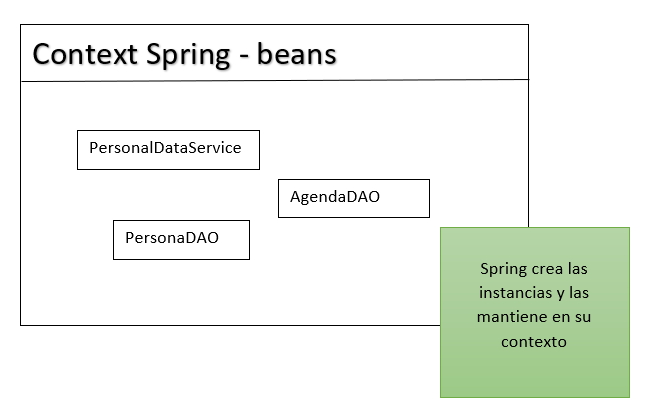
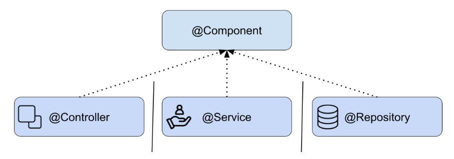
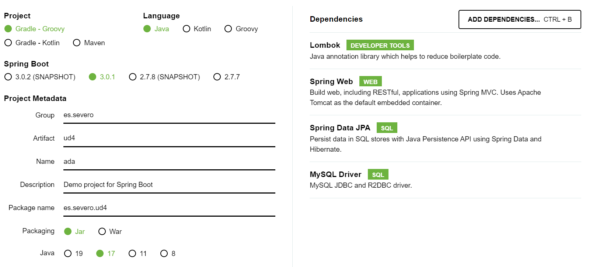
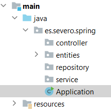

🚀 Spring. Beans, IoC y DI
🌱 ¿Qué es Spring?
Spring (a secas) es un gran framework para construir aplicaciones en Java.
Spring es un ecosistema. Dentro de Spring existen módulos especializados. Cada módulo resuelve una parte diferente del desarrollo de una aplicación.
❤️ Spring Core. El corazón del framework
Aunque Spring está formado por muchos módulos, su núcleo principal es Spring Core.
Es la base de todo Spring. Es el módulo que aporta las dos ideas clave: ofrece Inversión de Control (IoC) y Inyección de Dependencias (DI).
Gracias a esto:
- Ya no tienes que crear tú los objetos manualmente con
newpor todas partes, como hacíamos con los DAOs o service. - Spring crea y gestiona los objetos (beans) por ti.
- Spring entiende qué objetos necesita cada clase.
- Sin Spring Core, los demás módulos NO pueden funcionar.
Importante: Spring Core por sí solo no monta un servidor web ni una API REST ni conecta con la BD. Para eso usamos otros módulos.
🫘 ¿Qué es un Bean en Spring?
Un bean es simplemente un objeto que Spring crea, configura y gestiona por ti.
No usas new. Spring se encarga de:
- 📌 Crear el objeto
- 📌 Gestionar su ciclo de vida
- 📌 Resolver y conectar sus dependencias
- 📌 Guardarlo en el contenedor IoC
🔄 ¿Qué es la Inversión de Control (IoC)?
La Inversión de Control, es un principio de diseño, significa que tú NO creas NI gestionas los objetos, sino que Spring los hace por ti.
Para aplicar este principio, Spring mantiene en su ‘contexto’ (ApplicationContext) todas las instancias que gestiona de nuestra aplicación y utiliza la Inyección de Dependencias para buscar esos objetos en su contenedor y entregarlos automáticamente a las clases que los necesitan.
Spring llama a estas instancias gestionadas beans.

Los beans son las instancias de las clases que están disponibles para ser reutilizados y son gestionados dentro del contenedor de Spring (Spring container). Spring sabe qué dependencias existen entre las instancias y se encarga de satisfacerlas.
🔌 ¿Qué es la Inyección de Dependencias (Dependency Injection - DI)?
La DI es cómo Spring entrega a tus clases las dependencias que necesitan. Spring inyecta los objetos donde se necesitan.
La inyección de dependencias es un patrón de diseño que tiene como objetivo tomar la responsabilidad de crear las instancias de las clases que otro objeto necesita y suministrárselo para que esta clase los pueda utilizar.
Habitualmente nuestras clases dependen de otras para funcionar. Este patrón permite que una clase no sea responsable de crear o administrar sus dependencias, sino que estas le sean inyectadas desde el exterior.
🔌 Tipos de inyección que existen
1️⃣ Inyección por constructor (RECOMENDADA ✅)
@Service
public class PedidoService {
private final PedidoRepository repo;
public PedidoService(PedidoRepository repo) {
this.repo = repo;
}
}
- ✔ No necesitas
@Autowired(desde Spring 4.3+) - ✔ Si la dependencia no existe → error al arrancar
- ✔ El objeto siempre se crea completo y válido
- ✔ Inmutabilidad (final)
👉 Es la forma que usan los proyectos profesionales.
2️⃣ Inyección por campo (@Autowired en atributo)
@Service
public class PedidoService {
@Autowired
private PedidoRepository repo;
}
❌ Por qué NO se recomienda:
- Dependencias ocultas
- No puedes usar final
- Difícil de testear
- El objeto existe “incompleto” durante un tiempo
- Menos claro qué necesita la clase
👉 Es muy usada en tutoriales antiguos, pero no es buena práctica.
3️⃣ Inyección por setter
@Service
public class PedidoService {
private PedidoRepository repo;
@Autowired
public void setRepo(PedidoRepository repo) {
this.repo = repo;
}
}
⚠️ Cuándo se usa:
- Dependencias opcionales
- Casos raros de configuración dinámica
👉 En aplicaciones normales, no se suele usar.
🫘 Definir un Bean
Hay varias formas de decirle a Spring: “Este objeto lo quiero dentro del ApplicationContext”.
Para definir un nuevo bean en Spring tenemos dos opciones:
- Podemos marcar una clase Java como un bean, y permitir a Spring que lo descubra, esto se hace mediante el escaneo de componentes.
- Podemos definir explícitamente un nuevo bean mediante la anotación
@Bean.
Estas son dos técnicas diferentes para añadir beans a nuestro contexto.
1️⃣ 🧩 Añadiendo una anotación en la clase (Component Scan)
Es la forma más común. Spring escanea el proyecto y detecta clases con anotaciones.
🪃 Anotaciones principales
- 🧩
@Component→ genérica - 🧩
@Service→ lógica de negocio - 🧩
@Repository→ acceso a datos - 🧩
@Controller/@RestController→ capa web
Ejemplo
@Service
public class PedidoService {
}
👉 Spring crea automáticamente un bean de PedidoService.
2️⃣ ⚙️ Con @Bean en una clase @Configuration
Aquí no anotas la clase, sino un método que devuelve el objeto.
📌 Cuándo se usa
- Para clases de librerías externas
- Para crear beans de forma manual
- Para configurar cómo se crea el objeto
Ejemplo:
@Configuration
public class AppConfig {
@Bean
public Calculadora calculadora() {
return new Calculadora();
}
}
👉 El valor devuelto por el método es el bean.
3️⃣ 🧪 Definición automática por Spring Boot (autoconfiguración)
Spring Boot puede crear beans sin que tú escribas ninguno.
📌 Ejemplos:
- DataSource
- EntityManagerFactory
- KafkaTemplate
- RestTemplate
- ObjectMapper
👉 Spring Boot detecta dependencias y crea beans automáticamente.
🪔 ¿Qué es un componente @Component en Spring?
Un @Component es una anotación que le dice a Spring:
👉 “Esta clase forma parte de la aplicación y quiero que Spring cree y gestione una instancia de ella.”
Al momento de inicializar la aplicación, Spring escaneará el proyecto (component scan) y, cuando vea las clases anotadas con @Component:
- Crea un objeto o instancia de los componentes
- Los registrará en el ApplicationContext
- Los convertirá en beans
- Buscará quién necesita esos componentes y los inyectará en otras clases donde se necesite
@Component
public class Calculadora {
public int sumar(int a, int b) {
return a + b;
}
}
//Ahora Spring tiene un bean calculadora y puede usarlo en otro sitio:
@Component
public class ServicioMatematico {
private final Calculadora calculadora;
public ServicioMatematico(Calculadora calculadora) {
this.calculadora = calculadora;
}
}
🧩 ¿Por qué existen más anotaciones si ya está @Component?
Porque @Component es genérica. Spring ofrece anotaciones más específicas que son exactamente lo mismo por dentro, pero dan significado al código:
| Anotación | Para qué se usa |
|---|---|
@Component |
Componentes genéricos |
@Service |
Lógica de negocio |
@Repository |
Acceso a datos |
@Controller / @RestController |
Capa web |
🪃 Spring stereotype annotations
En Spring, un estereotipo es:
Una anotación que indica el rol de una clase dentro de la aplicación y hace que Spring la detecte automáticamente como un bean.
📦 Estereotipos principales de Spring
-
🧩
@Component: estereotipo genérico. Para cualquier clase que no encaje en una capa concreta -
🗄
@Repository: estereotipo de la capa de persistencia. Acceso a base de datos. Añade manejo especial de excepciones.Su función es el acceso a los datos. -
🧠
@Service: estereotipo de la capa de negocio. Contiene lógica de la aplicación. Aglutina llamadas a varios repositorios de forma simultánea. -
🌐
@Controller: estereotipo de la capa web (MVC). Realiza las tareas de controlador y gestión de la comunicación entre el usuario y el aplicativo. Maneja peticiones HTTP. Devuelve vistas. -
🌐
@RestController:variante de@Controller. Devuelve datos (JSON, XML). Usado en APIs REST.

🧠 ApplicationContext
Es una interfaz Java del framework Spring.
👉 Representa el contenedor central de Spring, que implementa IoC en Spring y permite la Inyección de Dependencias gestionando todos los beans de la aplicación.
1️⃣ Spring crea el ApplicationContext
Es lo primero que se crea al arrancar la aplicación.
2️⃣ Escanea el proyecto (Component Scan)
El ApplicationContext busca clases marcadas con anotaciones como: @Component, @Service, @Repository, @Controller, @Configuration, Métodos @Bean.
3️⃣ Crea los beans
Por cada clase detectada:
- Llama a su constructor
- Crea una instancia
- Decide cuándo crearla (normalmente al arrancar)
Aquí es donde entra IoC:
La creación de objetos ya no la hace el programador, la hace el
ApplicationContext.
4️⃣ Resuelve dependencias (DI)
Si un bean necesita otros:
@Service
class PedidoService {
private final PedidoRepository repo;
public PedidoService(PedidoRepository repo) {
this.repo = repo;
}
}
El ApplicationContext hace:
- “Este servicio necesita un PedidoRepository”
- “¿Tengo uno? Si no, lo creo”
- “Se lo paso al constructor de PedidoService”
- “Bean PedidoRepository completo y funcional”
Esto es Inyección de Dependencias.
5️⃣ Guarda los beans en su registro interno
Internamente, el ApplicationContext mantiene algo parecido a:
pedidoController → instancia
pedidoService → instancia
pedidoRepository → instancia
Ese “registro” permite que Spring sepa qué objeto entregar cuando se pide uno.
6️⃣ Entrega beans cuando se necesitan
Cuando usas:
@Autowired
PedidoService service;
El ApplicationContext:
- Busca el bean PedidoService
- Te lo inyecta automáticamente
Tú no sabes ni cuándo ni cómo se creó.
🪔 Cómo crear un proyecto con Spring en IntelliJ
Podemos ayudarnos de la herramienta spring initializr para crear el proyecto. Seleccionamos la siguiente configuración:

La exportamos y extraemos para abrir como un proyecto nuevo en IntelliJ.
Instalamos los plugins en IntelliJ llamados JPA Buddy y Lombok que serán de gran ayuda para desarrollar algunas funcionalidades y ahorrarnos boilerplate.
🪔 Autoconfiguración del proyecto
La anotación @SpringBootApplication habilita el mecanismo de configuración automática de la aplicación en función de las dependencias jar que encuentre en el classpath y se encarga del escaneo de componentes.
🪔 Requisitos para crear un proyecto con Spring
Para crear un proyecto con Spring debemos realizar una serie de pasos:
- Elegir el tipo de proyecto, es decir, elegir la herramienta de construcción del proyecto: Maven o Gradle y la versión de Java.
- Seleccionar las dependencias que necesitamos y su versión.
- Construir la estructura de directorios de nuestro proyecto, donde estará el código fuente, los ficheros properties, plantillas, etc.
- Uso y configuración de beans.
🪔 Estructura del proyecto
La estructura de un proyecto en Spring debe contener los siguientes paquetes entre otros:
